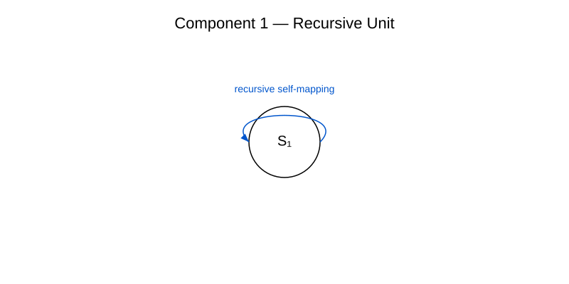

Component 1 — Recursive Unit
The recursive unit forms the elementary base component of the RRK framework. It defines the smallest functional structure that transforms across iterations and generates emergent properties.
Definition
A recursive unit is a structural element that uses itself as input for its own transformation. This creates a recursive process that forms the foundation for all higher meta‑structural layers.
Illustrative Representation

Role in the RRK Framework
- Meta‑Level (Component 2)
- Emergence Operator (Component 3)
- Convergence Operator (Component 4)
- Structural Transformation (Component 5)